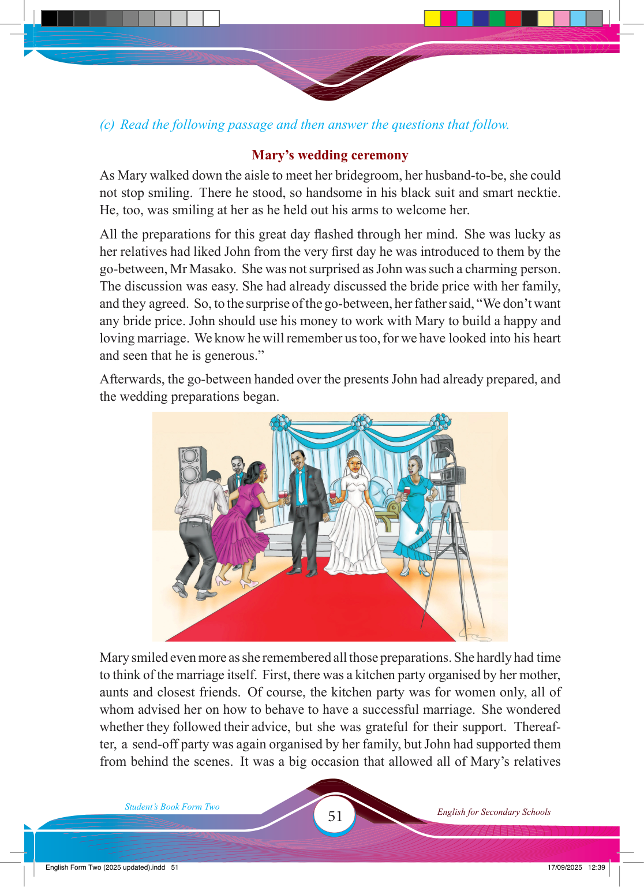

51
Student’s Book Form Two
English for Secondary Schools
(c) Read the following passage and then answer the questions that follow.
Mary’s wedding ceremony
As Mary walked down the aisle to meet her bridegroom, her husband-to-be, she could
not stop smiling. There he stood, so handsome in his black suit and smart necktie.
He, too, was smiling at her as he held out his arms to welcome her.
All the preparations for this great day fl ashed through her mind. She was lucky as
her relatives had liked John from the very fi rst day he was introduced to them by the go-between, Mr Masako. She was not surprised as John was such a charming person.
The discussion was easy. She had already discussed the bride price with her family, and they agreed. So, to the surprise of the go-between, her father said, “We don’t want any bride price. John should use his money to work with Mary to build a happy and loving marriage. We know he will remember us too, for we have looked into his heart and seen that he is generous.”
Afterwards, the go-between handed over the presents John had already prepared, and
the wedding preparations began.
Mary smiled even more as she remembered all those preparations. She hardly had time
to think of the marriage itself. First, there was a kitchen party organised by her mother,
aunts and closest friends. Of course, the kitchen party was for women only, all of whom advised her on how to behave to have a successful marriage. She wondered
whether they followed their advice, but she was grateful for their support. Thereaf-
ter, a send-off party was again organised by her family, but John had supported them
from behind the scenes. It was a big occasion that allowed all of Mary’s relatives
17/09/2025 12:39